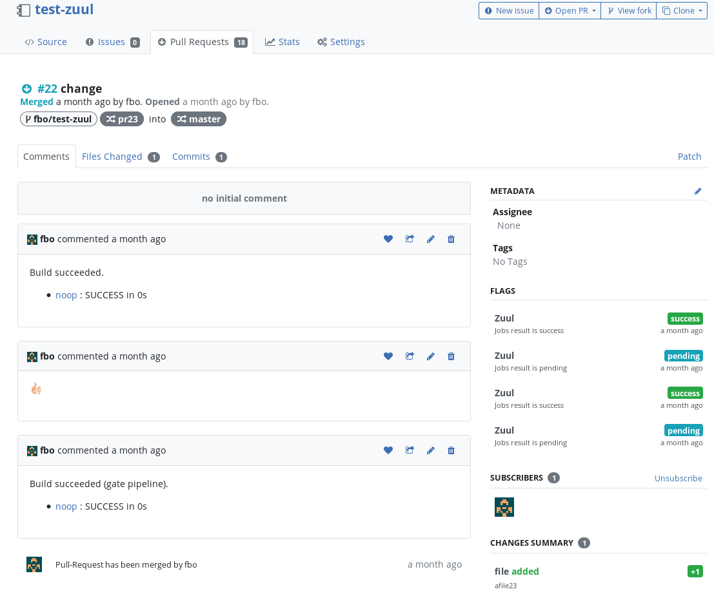

Zuul brings lots of advanced features for Continuous Integration and deserves to be usable by more projects, I decided to start the implementation of a Pagure driver for Zuul.
Zuul
Zuul is a powerful gating system that helps project maintainers to never break development branches. Thanks to unique features such as speculative merging and support for dependencies between repositories, Zuul leverages CI at scale. It also provides out the box support for Ansible (Zuul jobs are Ansible playbooks). Currently Zuul interfaces with Gerrit and Github as input sources. To learn more about Zuul you can access the Zuul website and the Zuul Hands-on blog post series.
Pagure
Pagure is a git-centered forge written in Python, mainly but not only used by the Fedora project. The pagure API provides most of the features needed by Zuul to gate Pull-Requests. You can see Pagure in action here and learn more about it on the project's page.
Pagure is quite similar to Github as it handles Pull-Requests, where a PR is a branch composed of one or more commits. A PR can be commented, reviewed, updated, CI flagged, and merged via the API. CI results for a PR are reported via the flag mechanism (success/failure/pending). Code review is done via comments with a :thumbsup: or a :thumbsdown: emoji. Pagure computes a score based on those emoji and only permits a maintainer to merge a PR if that score beats a minimum value set in the repository's settings. Pagure publishes repository events via web hooks and provides repository API tokens to perform authenticated calls like merging a PR or adding a CI flag.
The Zuul Pagure driver
Here is a link to the patch on OpenStack's code review server: https://review.openstack.org/#/c/604404/. It provides, for a single repository, a check/gate/post workflow and has been validated with Pagure's current master branch at the time of writing (future Pagure 5.2).
The driver makes use of the web hooks to receive repository events such as Pull Request Opened or Pull Request Commented. Events are received via Zuul Web and sent to the Zuul scheduler. The driver is able to read Pull-Requests status to get the Review score via the count of :thumbsup:/:thumbsdown: emoji, the CI status (flags) and the merge state. It is also able to set CI status and Pull-Request comments.
The driver provides Triggers and Requires filter attributes that can be used to define a Zuul pipeline. Below is an example of a Zuul pipeline for a Pagure source called pagure.sftests.com:
- pipeline:
name: check
manager: independent
require:
pagure.sftests.com:
merged: False
trigger:
pagure.sftests.com:
- event: pg_pull_request
action: comment
comment: (?i)^\s*recheck\s*$
- event: pg_pull_request
action:
- opened
- changed
start:
pagure.sftests.com:
status: 'pending'
comment: false
sqlreporter:
success:
pagure.sftests.com:
status: 'success'
sqlreporter:
failure:
pagure.sftests.com:
status: 'failure'
sqlreporter:
- pipeline:
name: gate
manager: dependent
precedence: high
require:
pagure.sftests.com:
score: 1
merged: False
status: success
sqlreporter:
trigger:
pagure.sftests.com:
- event: pg_pull_request
action: status
status: success
- event: pg_pull_request_review
action: thumbsup
start:
pagure.sftests.com:
status: 'pending'
comment: false
sqlreporter:
success:
pagure.sftests.com:
status: 'success'
merge: true
comment: true
sqlreporter:
failure:
pagure.sftests.com:
status: 'failure'
comment: true
sqlreporter:
- pipeline:
name: post
post-review: true
manager: independent
precedence: low
trigger:
pagure.sftests.com:
- event: pg_push
ref: ^refs/heads/.*$
success:
sqlreporter:
Currently three type of events can be used as triggers in pipelines:
- pg_pull_request: when a Pull-Request change
- pg_pull_request_review: when a comment is added to a Pull-Request
- pg_push: when a git branch is updated
The following requirements are supported:
- merged: the Pull-Request merged status
- status: the CI flag success/failure/pending
- score: the score based on thumbsup/thumbsdown count
First PR gated by Zuul on pagure.io
Setting up a Pagure repository for Zuul
The API token ACLs must allow at least:
- Comment on a pull-request
- Flag a pull-request
- Merge a pull-request
The web hook target must be (in repository settings):
- http://<zuul-web>/zuul/api/connection/<conn-name>/payload
The repository settings to be set:
- Always merge (? better to match internal merge strategy of Zuul)
- Minimum score to merge Pull-Request
- Notify on Pull-Request flag
- Pull-Requests
The connection to define in /etc/zuul/zuul.conf:
[connection pagure.sftests.com]
driver=pagure
webhook_token=XXXXX
server=pagure.sftests.com
baseurl=https://pagure.sftests.com/pagure
cloneurl=https://pagure.sftests.com/pagure/git
api_token=YYYYY
RFE merged on Pagure to support Zuul
Current issues
Here is the list of the issues that currently prevent the driver to provide the same capabilities as the Gerrit and Github drivers.
Blocking issues
- API token, webhook target and hook payload signature are set by repository. This makes difficult to support multiple repositories like in Gerrit or Github. An idea could be to group projects and set those settings at project's group level. There is an open RFE for this: https://pagure.io/pagure/issue/3948
Non blocking issues
- Pagure does not send an event when a git tag is added/removed
- Pagure does not send an event when a branch is created
- Pagure does not send an event when a branch is deleted
- Repository API tokens seem to expire after 60 days
- The Git-receive hook payload does not contain the list of commits that are a part of the merged PR with a detail of the files. An extra call to the merger is needed to detect if a .zuul.yaml exists at the root of the reporitory file tree.
- Pagure does not reset the review score when a PR code is updated. There is an open RFE for this: https://pagure.io/pagure/issue/3985
- CI status flag's updated field unit is the second, it'd be better to have values to the millisecond, in order to avoid sorting issues when statuses are changed in the span of a second.
- Zuul needs to be able to search commits that set a dependency (depends-on) to a specific commit to reset jobs run when a dependency is changed. On Gerrit and Github, searching through commit messages is possible and used by Zuul. Pagure does not offer this feature.
Follow up
- Showcase the driver to the Pagure folks
- Implement https://pagure.io/pagure/issue/3948
- Write the driver's unit tests and documentation
- By Pagure 5.3, have a multi-repository (depends-on) workflow working
Any help welcome :)